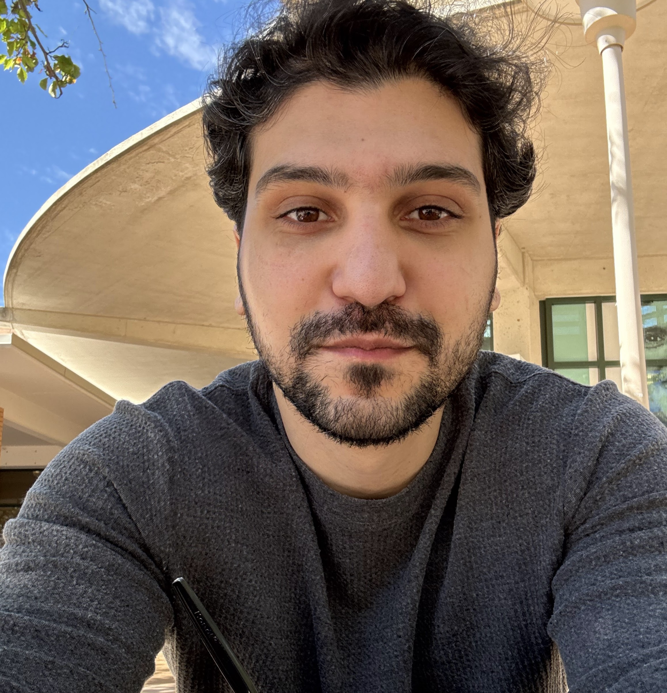
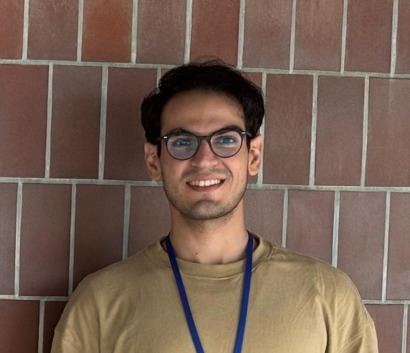

Current Members
Meet our talented team of researchers pushing the boundaries of extragalactic astronomy.
Project Scientists & Postdoctoral Researchers

Saeed Rezaee
Project Scientist
UCR
Saeed Rezaee is a Project Scientist at the University of California, Riverside, specializing in extragalactic astronomy. His research focuses on understanding galaxy evolution, including star formation rates, starburst activity, and the properties of interstellar dust. In addition to his scientific work, he is actively involved in developing data science curricula and advancing the application of artificial intelligence in astronomical research.
Graduate Students
Sina Taamoli
Graduate Student Researcher
UCR
Sina is a graduate student at UCR. His research focuses on how large-scale structures in the universe shape galaxy evolution. His work leverages both machine learning and conventional pattern recognition approaches to extract features of various sizes and shapes in the cosmic web and examine their influence on star formation activity over cosmic time.

Samaneh Shamyati
Graduate Student Researcher
UCR
Samaneh is a first-year PhD student whose research focuses on quiescent galaxies at high redshift. She analyzes JWST/NIRCam imaging and grism spectroscopy to identify and characterize quiescent candidates over cosmic time. She also performs spectroscopic data reduction for Keck/MOSFIRE observations.

Ali Hadi
Graduate Student Researcher
UCR
Ali is a first-year PhD student whose research focuses on the spatial study of star formation burstiness. He combines photometric imaging with IFU spectroscopy, performing pixel-by-pixel SED fitting to map variations in star formation histories across galaxies. He also conducts spectroscopic data reduction for Keck/MOSFIRE observations.
Aryana Haghjoo
PhD Student
UCR
Aryana Haghjoo is an early-career astrophysicist with a strong foundation in both theoretical and data-driven research. She holds an M.Sc. in Physics from McGill University, where she specialized in global 21cm cosmology, and is currently pursuing a Ph.D. in Astronomy at the University of California, Riverside. Her recent work applies machine learning techniques—particularly diffusion models—to enhance the resolution of galaxy spectra.
Kevin Sanford
Master Student
UCR
Kevin is a graduate student at UCR and an employee at Lawrence Livermore National Laboratory. His diverse background includes data science, physics, optics, and electronics. His work involves the application of machine learning to solve engineering problems related to optical devices at the National Ignition Facility.